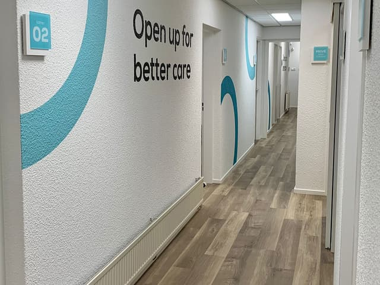
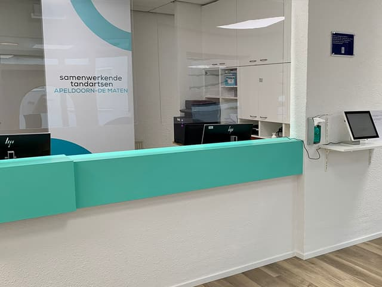
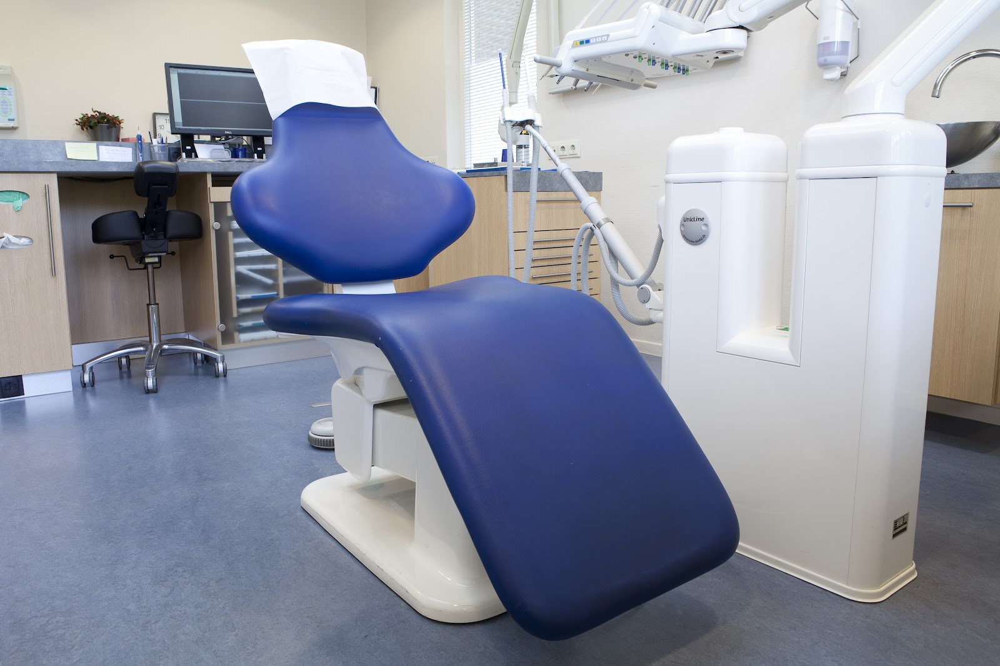
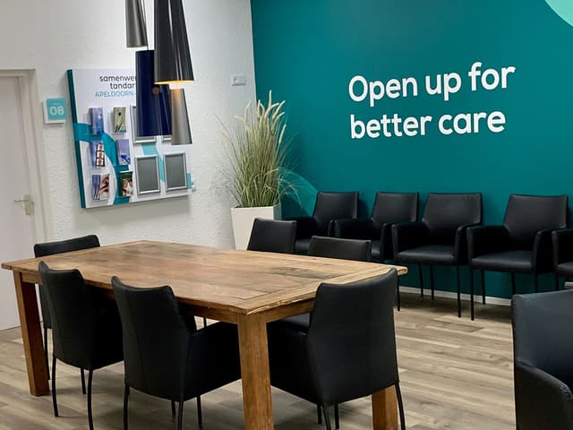
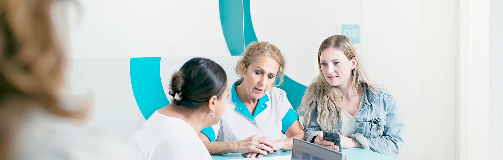

Algemene tandheelkunde
Daar richten we ons vooral op. Bij een controle kijken we of uw tandvlees gezond is en controleren we uw gebit op onder andere gaatjes. Waar nodig verwijzen we u op tijd door naar een specialist, zoals een parodontoloog.
Tandarts in Apeldoorn, De Maten
Wij zijn toegankelijk, gastvrij en gedreven. Voor de halfjaarlijkse controle, de mondhygiënist, een beugel of een kies die plots pijn doet: u kunt bij ons terecht aan de Waleweingaarde 6.

Ma t/m vr open van 08:30 tot 17:00
Dinsdagavond ook van 17:30 tot 20:00. Lunchpauze 12:30 tot 13:00.
Bent u patiënt bij ons en meldt u pijnklachten op een werkdag vóór 10:00 uur, dan streven we ernaar u dezelfde dag nog te helpen.
Bel de praktijk: 055 539 6587Bel gewoon het praktijknummer, dan kijken we wat er kan.
Bel de spoeddienst op 085 018 9466. Buiten openingstijden, in het weekend en op feestdagen kunt u ook terecht bij 0900 - 15 15.
Uw BSN, verzekeringspas en identiteitsbewijs. Een spoedconsult betaalt u direct met pin of creditcard, contant kan helaas niet.
Onze praktijk heeft 8 ruim ingerichte behandelkamers met in totaal 9 behandelstoelen. U vindt de ingang aan de Waleweingaarde 6.
Om de hoek zit een bushalte, en komt u met de auto, dan is er voldoende parkeergelegenheid.
We werken nauw samen met andere Samenwerkende Tandartsen-praktijken in de omgeving. Zo heeft u alle specialismen binnen handbereik. Ons team wordt periodiek bijgeschoold, zodat u zorg krijgt volgens de nieuwste technieken.
Plan uw route



Daar richten we ons vooral op. Bij een controle kijken we of uw tandvlees gezond is en controleren we uw gebit op onder andere gaatjes. Waar nodig verwijzen we u op tijd door naar een specialist, zoals een parodontoloog.
Op iedere leeftijd belangrijk. De tandarts of mondhygiënist kijkt naar meer dan alleen uw gebit en maakt soms foto's. Daarna hoort u of er een vervolgafspraak nodig is, en hoe vaak u het beste terugkomt.
We hebben een eigen orthodontie-afdeling met een tandarts voor orthodontie en een team van zelfstandige ortho-assistenten. Samen zorgen zij dat uw gebit netjes recht komt te staan.
Onze mondhygiënisten en preventieassistenten helpen u uw tanden en tandvlees gezond te houden, zodat u minder vaak in de stoel hoeft voor een behandeling.
De tarieven worden elk jaar door de NZa vastgesteld en zijn bij iedere praktijk hetzelfde. Tandsteen verwijderen of foto's staan apart op de factuur. Of u het vergoed krijgt hangt af van uw aanvullende verzekering. Voor kinderen tot 18 jaar valt tandheelkunde in het basispakket, met uitzondering van kroon- en brugwerk en orthodontie.
Dit jaar nog niet op controle geweest? Dan is dit het moment. Bel ons even.
Van de balie tot de behandelstoel: dit is wie u bij ons tegenkomt. Van onze tandartsen staat het BIG-nummer erbij, zodat u hun registratie zelf kunt controleren.

8,9
gemiddeld uit 3263 patiëntbeoordelingen
"Vanaf het moment dat ik binnenkwam voelde ik me welkom en op mijn gemak. De ontvangst was vriendelijk en professioneel, en de wachttijd was minimaal. De tandarts (Janneke Vos) nam echt de tijd om alles goed uit te leggen en stelde me gerust tijdens de behandeling."
Ana Bojadziev via Google
Patiëntervaringen zoals ze op onze huidige website staan.
| Maandag | 08:30 - 12:30, 13:00 - 17:00 |
| Dinsdag | 08:30 - 12:30, 13:00 - 17:00 17:30 - 20:00 |
| Woensdag | 08:30 - 12:30, 13:00 - 17:00 |
| Donderdag | 08:30 - 12:30, 13:00 - 17:00 |
| Vrijdag | 08:30 - 12:30, 13:00 - 17:00 |
| Zaterdag | Gesloten |
| Zondag | Gesloten |
Tijdens feestdagen kunnen de tijden afwijken.
Vul uw gegevens in, dan nemen wij contact met u op.
Liever bellen? Dat kan op 055 539 6587.